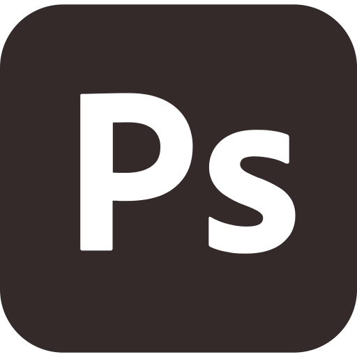
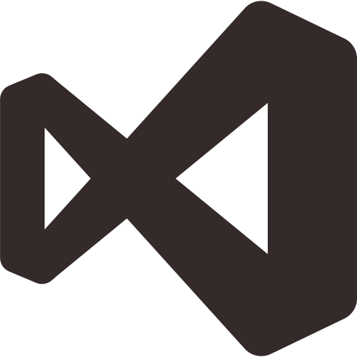

Sobre mí
Soy estudiante en la Licenciatura en Diseño y Comunicación Visual en la Universidad Nacional de Lanús.
Acerca de mí
Nací en Capital Federal pero desde siempre he vivido en Lanús Oeste, más precisamente en el barrio de Caraza. Soy estudiante de la carrera de Diseño y Comunicación Visual en la Universidad Nacional de Lanús. Me encuentro en proceso de formación dentro de un campo que me apasiona profundamente, donde puedo explorar tanto la creatividad como los aspectos técnicos del diseño. A lo largo de la carrera, he adquirido conocimientos en áreas como tipografía, diseño editorial, comunicación digital y herramientas visuales, que me permiten desarrollar propuestas gráficas efectivas y con identidad. Estoy comprometido con seguir creciendo profesionalmente y aportar soluciones visuales que comuniquen de manera clara, estética y significativa.
Mi forma de trabajo
Además de mi formación académica, me interesa mantenerme actualizado con las tendencias del diseño contemporáneo, explorando constantemente nuevas herramientas y recursos que potencien mi trabajo. Participo en proyectos tanto individuales como grupales, lo que me ha permitido desarrollar habilidades de trabajo en equipo, comunicación y gestión del tiempo. También tengo un fuerte interés por el diseño aplicado a causas sociales y culturales, ya que considero que la comunicación visual tiene un rol fundamental en la transformación y sensibilización de la sociedad. Mi objetivo es seguir creciendo como diseñador, aportando creatividad, responsabilidad y compromiso en cada proyecto que emprenda.
Algunos de mis trabajos
Software
- 
- 